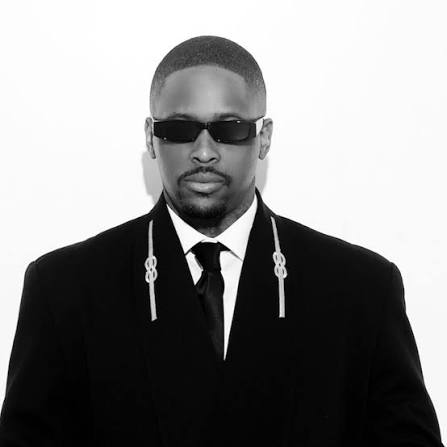
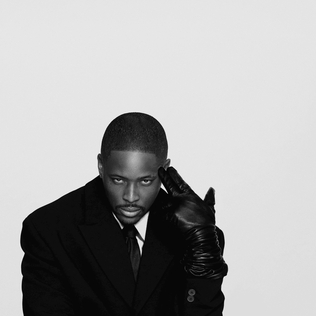

Keenon Dequan Ray Jackson, known professionally as YG, is an American rapper, songwriter, and actor from Compton whose raw West Coast gangsta rap storytelling blends street culture with mainstream appeal. Rising with platinum hit “Toot It and Boot It” in 2010, he scored major success with multi-platinum “My Nigga” and albums like My Krazy Life, Still Brazy, and Stay Dangerous. Collaborating with artists like Drake, 2 Chainz, and Tyga, he’s also acted in films, launched the 4Hunnid brand, and co-founded nonprofit 4Hundred Waze.
The Gentlemen's Club is the seventh studio album by the American rapper YG. It was released on June 19, 2026, through 4Hunnid Records under exclusive license to 10K Projects. The album contains 15 tracks and features guest appearances from Pusha T, Isaiah Falls, Odeal, Sasha Keable, Tyler, the Creator, Shoreline Mafia, PayGotti, Ogi, JID, Ab-Soul, and Buddy. YG announced the album in May 2026, alongside a new label partnership with 10K Projects. In interviews and criticism around the album, writers characterized it as a self-examining project built around image, self-worth, and narrative rap. Reviews highlighted the album's self-examination and concept, while several writers discussed "Tiffany" as a difficult or controversial story song about trans-panic violence. The album failed to chart in any known territory, selling fewer than 10,000 album-equivalent units first week.

June 19, 2026
55 Minutes
4Hunnid Records & 10K Projects
1. INTRO
2. OMG feat pusha t
3. KUDOS
4. HITMAN
5. SIMON SAYS feat isaiah falls, odeal & sasha keable
6. ON THE LOW feat tyler, the creator
7. WE KNOW THE TRUTH
8. HOLLYWOOD feat shoreline mafia, ogheesy & fenix flexin
9. GANG BIZNESS feat paygotti
10. READY TO DIE (hitman response)
11. WRITING MY WRONGS feat ogi
12. DINNER DATES & HEART BREAKS
13. TIFFANY
14. INSECURE feat jid & ab-soul
15. MID LIFE CRISIS feat buddy